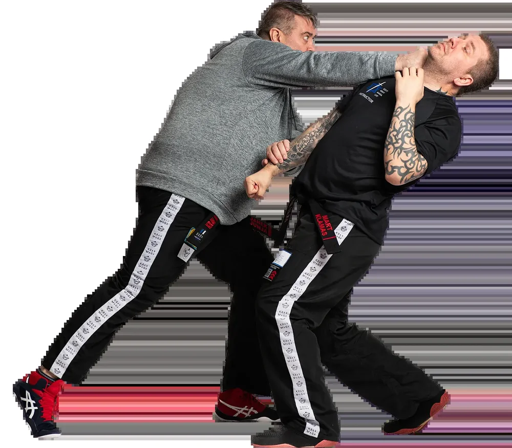
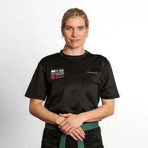
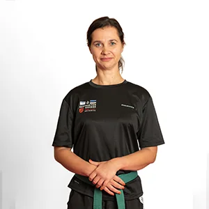
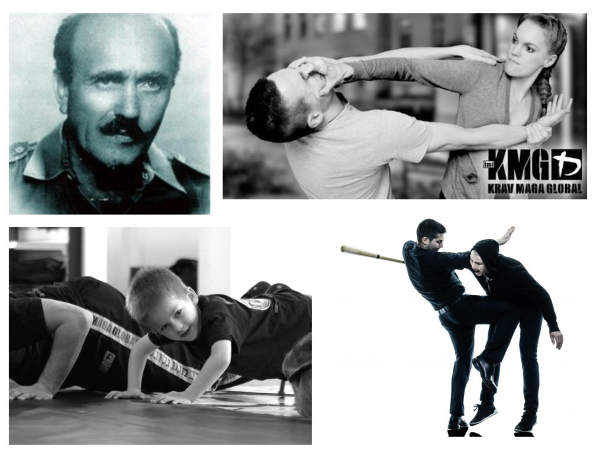
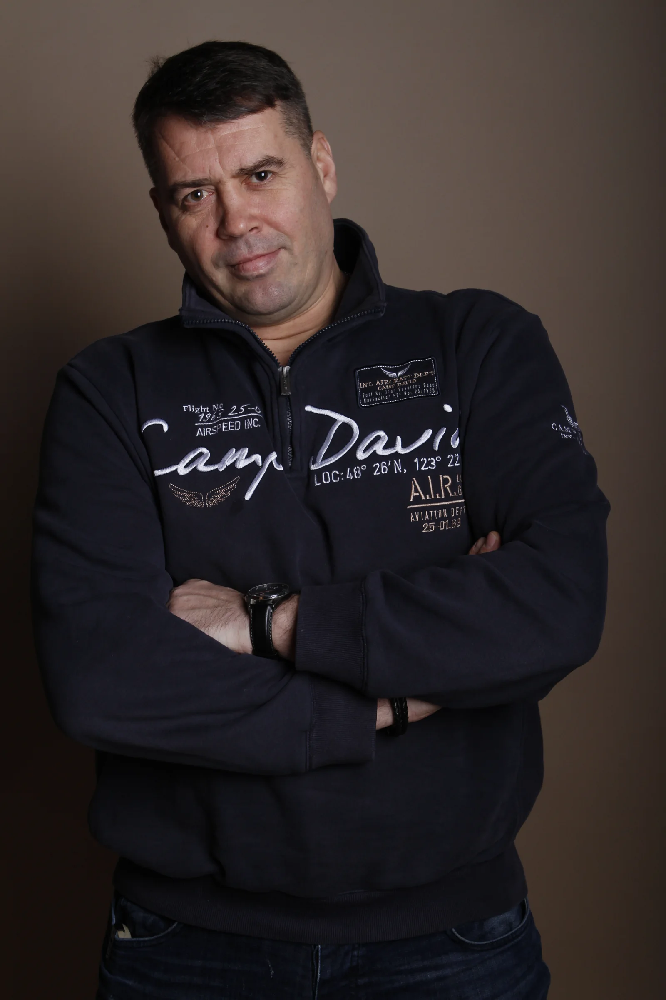

Teadlikkus
Õpid märkama muutusi ümbruses, distantsis ja inimeste käitumises. Mida varem riskile tähelepanu pöörad, seda rohkem on sul häid valikuid.
Praktiline enesekaitse
Enamik olukordi laheneb kõige paremini enne füüsilist kontakti. Kui vältida ei ole enam võimalik, aitab treening säilitada tegutsemisvõime ja liikuda selge eesmärgiga turvalisuse poole.
Enesekaitse enne vastasseisu
Treening annab rohkem häid valikuid. Eesmärk ei ole tõestada, kes on tugevam, vaid märgata ohtu varem ja jõuda turvaliselt eemale.
Õpid märkama muutusi ümbruses, distantsis ja inimeste käitumises. Mida varem riskile tähelepanu pöörad, seda rohkem on sul häid valikuid.
Õpid looma distantsi, seadma piire ja lahkuma enne, kui olukord teravneb. Sageli on parim lahendus see, mis ei jõua füüsilise vastasseisuni.
Kui muud võimalused on ammendunud, aitavad lihtsad ja läbiharjutatud tegevused võita aega ning jõuda ohutumasse kohta.
Üks põhimõte, erinevad vajadused
Alusta sealt, kus sa praegu oled. Varasem kogemus ei ole vajalik.

Täielikule algajaleRahulik ja struktureeritud tee praktilise enesekaitse juurde.
Tutvu baaskursusega →

Naistele Toetav keskkond. Praktiline sisu.Teadlikkus, piiride seadmine, eemaldumine ja kontrollitud harjutused ilma macho-hoiakuta.
Enesekaitse naistele → Lastele ja koolidele
Lastele ja koolidele
Eakohane treening piiride, kiusamisolukordade, abi küsimise ja paremate otsuste tegemiseks.
Koolidele ja lastele →
EttevõteteleKohandatud koolitus riskide märkamiseks, pingelise kliendisuhtluse rahustamiseks ja turvalisemate valikute tegemiseks.
Tutvu ettevõttekoolitusega →
1:1 või 1:2Diskreetne ja paindlik treening sinu kogemuse, eesmärkide ning päriselu murekohtade järgi.
Tutvu personaaltreeninguga →Alusta siit
Baaskursus on mõeldud inimestele, kes alustavad nullist. Eelnevat kogemust ega erilist füüsilist ettevalmistust ei nõuta.
Kolme kuu jooksul õpid praktilisi enesekaitseoskusi rahulikult ja süsteemselt. Baaskursust viivad läbi instruktorid vaneminstruktorite juhendamisel.
Kolm tasuta proovipäeva
Enne septembris algavat kursust toimub kolm eraldi tasuta proovipäeva. Proovipäeval saad ise kaasa teha ja tunnetada treeningu õhkkonda enne, kui otsustad kursusega liituda.
Täpsed kuupäevad teatame peagi. Huvi saad kirja panna juba praegu ja anname sulle teada, kui ajad on selged.
Pane oma huvi kirja →Kursuse ajal
Treeningud toimuvad esmaspäeviti ja kolmapäeviti. Praktilised harjutused liiguvad lihtsamatest alustest järk-järgult realistlikumate olukordadeni.
Pärast kursust
Kursuse järel võid soovi korral teha kollase vöö eksami. Enne eksamit toimub seminar, kus vaadatakse üle eksamiks vajalik materjal.
Instruktorid
Hea treening tähendab selget ülesehitust, turvalist keskkonda ja järk-järgult kasvavat realistlikkust. Eesmärk on arendada oskust mõelda, otsustada ja tegutseda, mitte luua vale kindlustunnet.
Akadeemia instruktorid õpetavad praktilist enesekaitset selge, turvalise ja järk-järgult realistlikuma metoodikaga.
Juhtiv instruktor
Krav Maga tase G5
Janek on KMG Eesti direktor ja peainstruktor. Ta on õppinud võitluskunste alates 1992. aastast, sealhulgas sõjaväe ja politsei käsivõitlust, hapkidot ning eskrimat.
Krav Maga väljaõppe on ta läbinud Soomes, Iisraelis, Hollandis ja Slovakkias.
Vaneminstruktor
Krav Maga tase G2
Fred läbis 2018. aastal KMG Eesti esimese rahvusvaheliselt litsentseeritud Krav Maga instruktorite baaskursuse. Koolituse maht oli 180 tundi.
Vaneminstruktor
Krav Maga tase P4
Mart kuulub Eesti Krav Maga Akadeemia vaneminstruktorite hulka.
Vaneminstruktor
Krav Maga tase P5
Kaspari varasem kogemus hõlmab Wadō-ryū karated ja Hokutoryu Ju-Jutsut.
Instruktor
Sandra kuulub Eesti Krav Maga Akadeemia instruktorite hulka.
Instruktor
Eike kuulub Eesti Krav Maga Akadeemia instruktorite hulka.
Ausad vastused
Krav Maga kohta leidub internetis palju kriitikat. Osa sellest on õigustatud. Hea kool ei väldi keerulisi küsimusi.
Enesekaitse on eesmärk; Krav Maga on praktiline treeningmeetod selle saavutamiseks.
Akadeemias käsitleme enesekaitset tervikuna: ohu märkamine, konflikti vältimine, piiride seadmine, eemaldumine ja vajadusel lihtne füüsiline tegutsemine. Krav Maga annab nende oskuste harjutamiseks selged põhimõtted ja praktilised harjutused.
Mõlemat tuleb ausalt öelda. Krav Maga kvaliteet sõltub väga palju koolist ja instruktorist. Õigustatud kriitika puudutab nõrka kvaliteedikontrolli, liiga koostöövalmis harjutusi ja treeningut, kus oskusi ei proovita kasvava surve all.
Vastutustundlik treening kasutab järk-järgulist vastupanu, realistlikku otsustamist, turvalist survet ja õigusliku konteksti mõistmist. Ükski süsteem ei tee inimest puutumatuks. Vältimine, eemaldumine ja abi saamine jäävad esimeseks eesmärgiks.
Jah. Baaskursus on mõeldud inimesele, kellel ei pruugi olla varasemat võitlusspordi ega enesekaitse kogemust. Alustame põhimõtetest, liikumisest, distantsist ja lihtsatest harjutustest.
Ei pea. Treeningut saab alustada oma praeguselt tasemelt. Füüsiline vorm paraneb järk-järgult treeningu käigus ning harjutusi saab teha kontrollitud ja arusaadavas tempos.
Treeningus võib olla kontakt, kuid see peab olema kontrollitud, selgitatud ja eesmärgipärane. Survet lisatakse järk-järgult ning partnerite ülesanne on aidata üksteisel õppida, mitte kedagi murda.
Vigastuste riski ei saa üheski füüsilises treeningus täielikult välistada, kuid hea juhendamine, selged reeglid ja sobiv tempo hoiavad riski võimalikult madalal.
Jah. Fookus on riskide märkamisel, piiride seadmisel, eemaldumisel ja praktilistel tegevustel, mitte jõu näitamisel. Kui soovid alustada naistele suunatud formaadis või naisinstruktori juhendamisel, on selleks olemas eraldi võimalus. Paljudele sobib ka segagrupp.
Poks, kickboxing, maadlus, BJJ, MMA ja traditsioonilised võitluskunstid võivad anda väga tugevaid oskusi. Eriti oluline on oskus harjutada elava vastupanuga ja taluda kontrollitud kontakti.
Krav Maga põhirõhk on tsiviilolukordadel, kus eesmärk ei ole võita matši, vaid märgata ohtu, vältida eskalatsiooni, kaitsta ennast või teist inimest, teha õiguslikult mõistlik otsus ja jõuda turvaliselt eemale.
Ei. Kollase vöö eksam on vabatahtlik. Baaskursuse saab läbida ilma eksamile minemata. Kui valid eksami, toimub enne seda seminar, kus vaadatakse üle eksamiks vajalik materjal.
Esimene samm
Kui sa ei ole kindel, milline treening sulle sobib, alusta baaskursusest või küsi nõu. Hea enesekaitse algab rahulikust otsusest õppida.